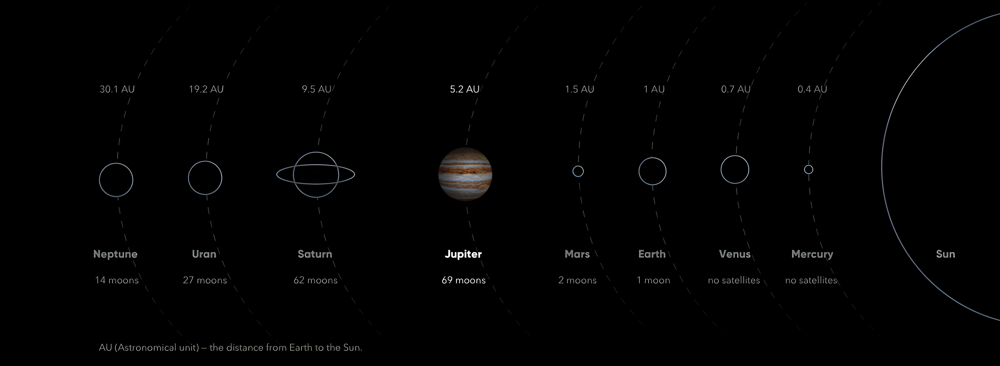
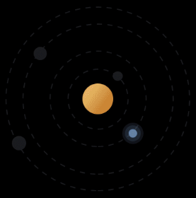

Jupiter is the fifth planet from the Sun and the largest in the
Solar System. It is a giant planet with a mass one-thousandth that
of the Sun, but two-and-a-half times that of all the other planets
in the Solar System combined.
DAY
9.92496 Hours
RADIUS
43,440.7 miles
MOONS
Gas Giant
PLANET TYPE
53 confirmed

Solar System01
Overview
Jupiter is the fifth planet from the Sun and the largest in the
Solar System. It is a giant planet with a mass one-thousandth that
of the Sun, but two-and-a-half times that of all the other planets
in the Solar System combined.
Jupiter's Great Red Spot
What's Inside?
ONE WAY LIGHT TIME TO SUN, MINS
44.922856
DISTANCE TO SUN, MILES
502,314,7111
LENGHT OF YEAR
4,333 Earth days
02
Features
Jupiter is the fifth planet from the Sun and the largest in the
Solar System. It is a giant planet with a mass one-thousandth that
of the Sun, but two-and-a-half times that of all the other planets
in the Solar System combined.
Pearls
Jupiter's so-called 'string of pearls' on Jupiter is a series of
massive counterclockwise rotating storms that appear as white
ovals in the gas giant's southern hemisphere. Since 1986, these
white ovals have varied in number from six to nine.
There are currently eight white ovals visible.
Massive rotating storms at 40 degrees south latitude on the gas
giant planet
The spatial scale of a mass of spiraling clouds is 13.86
miles/pixel (22.3 kilometers/pixel).
03
In depth
Jupiter's environment is probably not conducive to life as we know
it. The temperatures, pressures and materials that characterize
this planet are most likely too extreme and volatile for organisms
to adapt to.
While planet Jupiter is an unlikely place for living things to
take hold, the same is not true of some of its many moons. Europa
is one of the likeliest places to End life elsewhere in our solar
system. There is evidence of a vast ocean just beneath its icy
crust, where life could possibly be supported.
The temperature in the clouds of Jupiter is about minus 145
degrees Celsius (minus 234 degrees Fahrenheit). Th. The core
temperature may be about 24,000 degrees Celsius (43,000 degrees
Fahrenheit). That's hotter than the surface of the sun!
Jupiter's atmosphere is made up mostly of hydrogen (H2) and helium
(He).
90%
Hydrogen
10%
Helium

Jupiter Moons on it's Orbit
Moons
Jupiter has 53 named moons. Scientists have discovered 14 more.
But those 14 moons do not have official names. Scientists now
think Jupiter has a total of 67 moons. The most recent moons were
discovered in 2011. The planet's four largest moons are Ganymede
(GAN-i-meed), Callisto (kuh-LIS-toe), lo leye-01-1), and Europa
(yur-O-puh).